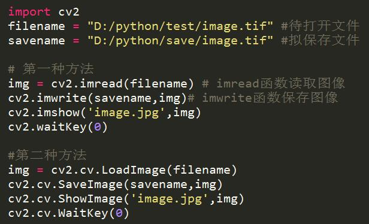
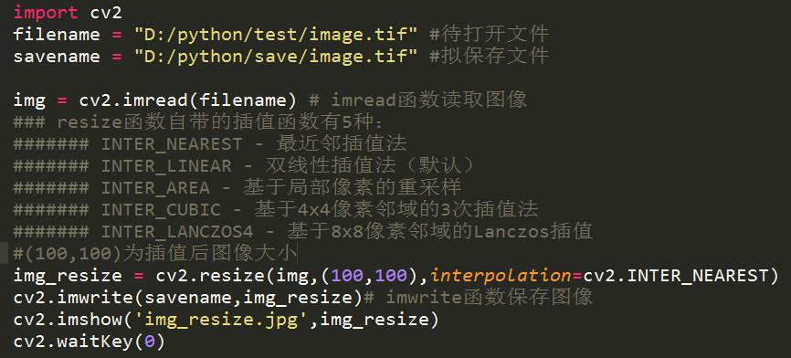

Remote Sensing
您现在的位置是：网站首页>>【技术文章】【技术文章】】OpenCV图像处理系列之基本操作
OpenCV图像处理系列之基本操作
发布时间：2018-07-03 23:28:16来源：E点击：368
OpenCV是一个基于BSD许可（开源）发行的跨平台计算机视觉库，可以运行在Linux、Windows、Android和Mac OS操作系统上。它轻量级而且高效——由一系列 C 函数和少量 C++ 类构成，同时提供了Python、Ruby、MATLAB等语言的接口，实现了图像处理和计算机视觉方面的很多通用算法。
开始本章内容之前，请确保已具备基本的语言环境，详细请参考相关文章。
1、图像读、写和显示操作

2、图像缩放

OpneCV有很多处理图像的函数可以学习使用，方便快捷，易于掌握！！！